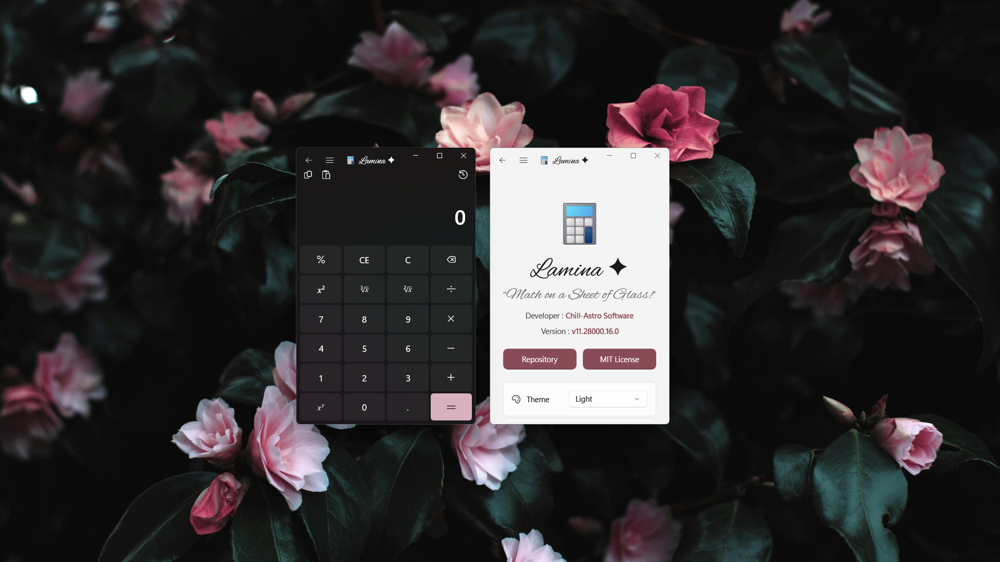

Lamina ✦ is a WinUI 3 calculator that not only
includes a Regular Calculator but also something called
"Scripties".
She supports
Mensuration, Finance, Currency Conversion, Unit Conversions
And More!
,
making her a Very Extendable Option.
Target OS:
Windows 11 ONLY.
|
Latest Stable Version:
v11.28000.16.0
App Execution Aliases:
lamina.exe &
lmna.exe
Codename:
LMNA
What are Scripties?
Scripties are High Performance GUI equivalents of Console Scripts, that are Reliable and Easy to Make.
Categories:
- Built-In Scripties - Made in XAML & C# and Compiled. ( Static )
- User Made Scripties - Made in JSON and loaded by my Interpereter Dynamo. ( Dynamic )
Features :
Simple and Clean GUI. ✓
Dozens of calculation options. ✓

Programmable using JSON-based Logic. ✓
Fast and Error-Proof Calculations. ✓
High Precision for decimals. ✓
Modern UI with Fluid Animations and Transitions. ✓

History Support for the Base Calculator UI. ✓

Theme switching built in. ✓

Backdrop switching between Mica Alt, Mica and Acrylic! ✓
Eggcelent Looking Splash Screen that can be toggled OFF. ✓
Available in both Msix & Installer Variants. ✓

Install Lamina ✦ from Winget :
winget install LaminaInstallation :
-
Download the
.msixand.cerfiles from the latest release. -
Import the
.cerfile to the Trusted Root Certificates Store. ( First Run ONLY! )
Download the Setup.exe that does the
Importing and Installation FOR YOU!
DETAILS ON DYNAMO :
Dynamo Scriptie Loader (DSL) is an
Interpreter for
JSON Code for creating a Dynamic UI
for User-Made Math.
Features :
- Dynamically Generates a UI with the Required Fields and Formulae Entered by the User.
-
ONE PAGE, MULTIPLE POSSIBILITIES.
Yes,
DyNamoPage.xamlis the Backbone of Any Scriptie Mod. -
Integrated Manager
DyNamoManagerPage.xamlthat Interprets the Mods and feeds this data intoDyNamoPage.xamlto Load the UI.
{
"Metadata": {
"Name": "",
"Author": "",
"Version": "",
"Description": "",
"Repo": ""
},
"UI": {
"Formula": "",
"Inputs": [
{
"Header": "Input Label",
"Placeholder": "0.0",
"Key": "var_name"
}
]
},
"Logic": {
"Output": "NCalc math string using [var_name]",
"Error": "Message if math fails"
}
}Thus, a Massive Time Saver and Low Barrier to Entry as one can make modules in Notepad.
Since NCalc is NCalc and not a Compiler, the Risk of Malicious Mods is VERY LOW.
Steps to Use Dynamo Scriptie Loader:
- Go to Lamina ✦ Modules Repo .
-
Download your Desired Mod,
a
.laminaFile. -
Go to Menu > Press
+ Addand Add the File from the Popup!
Additional Media :